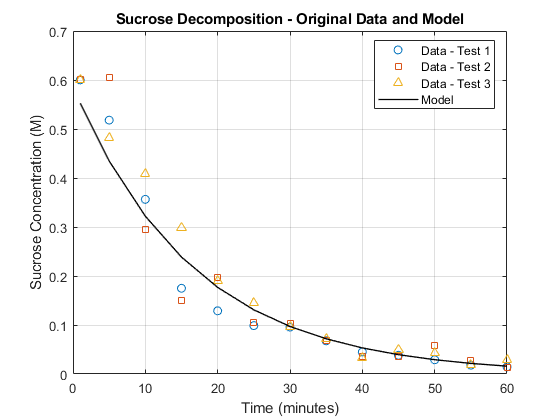

Contents
INITIALIZATION
data = readmatrix('Sucrose_Data.csv');
time = data(:, 1);
conc_test1 = data(:, 2);
conc_test2 = data(:, 3);
conc_test3 = data(:, 4);
CALCULATIONS
mean_concentration = mean([conc_test1, conc_test2, conc_test3], 2);
std_concentration = std([conc_test1; conc_test2; conc_test3], 0, 1);
idx1 = find(time == 1);
idx2 = find(time == 10);
slope_test1 = ma3_ind_2_secantline_yu1398(time, conc_test1, idx1, idx2);
slope_test2 = ma3_ind_2_secantline_yu1398(time, conc_test2, idx1, idx2);
slope_test3 = ma3_ind_2_secantline_yu1398(time, conc_test3, idx1, idx2);
FIGURE DISPLAY - First Figure (Original Data and Model)
concentration = 0.5867 * exp(-0.06 * time);
figure;
plot(time, conc_test1, 'o', 'MarkerSize', 6, 'DisplayName', 'Data - Test 1'); hold on;
plot(time, conc_test2, 's', 'MarkerSize', 6, 'DisplayName', 'Data - Test 2');
plot(time, conc_test3, '^', 'MarkerSize', 6, 'DisplayName', 'Data - Test 3');
model = polyfit(time, mean_concentration, 3);
y_model = polyval(model, time);
plot(time, concentration,'r-', 'LineWidth', 1, 'Color', 'k', 'DisplayName', 'Model');
title('Sucrose Decomposition - Original Data and Model');
xlabel('Time (minutes)');
ylabel('Sucrose Concentration (M)');
grid on;
legend('show', 'Location', 'best');
hold off;

TEXT DISPLAY - Average Rates of Change
rate_test1 = (conc_test1(idx2) - conc_test1(idx1)) / (time(idx2) - time(idx1));
rate_test2 = (conc_test2(idx2) - conc_test2(idx1)) / (time(idx2) - time(idx1));
rate_test3 = (conc_test3(idx2) - conc_test3(idx1)) / (time(idx2) - time(idx1));
fprintf('\nAverage Rates of Change (Calculated from Time = 1 to Time = 10 minutes):\n');
fprintf('--------------------------------------------------------------\n');
fprintf('Test 1 Rate of Change: %.3f M/min\n', rate_test1);
fprintf('Test 2 Rate of Change: %.3f M/min\n', rate_test2);
fprintf('Test 3 Rate of Change: %.3f M/min\n', rate_test3);
fprintf('--------------------------------------------------------------\n');
fprintf('Note: These values represent the average rate of change in sucrose concentration from 1 minute to 10 minutes.\n');
fprintf('--------------------------------------------------------------\n');
Average Rates of Change (Calculated from Time = 1 to Time = 10 minutes):
--------------------------------------------------------------
Test 1 Rate of Change: -0.027 M/min
Test 2 Rate of Change: -0.034 M/min
Test 3 Rate of Change: -0.021 M/min
--------------------------------------------------------------
Note: These values represent the average rate of change in sucrose concentration from 1 minute to 10 minutes.
--------------------------------------------------------------